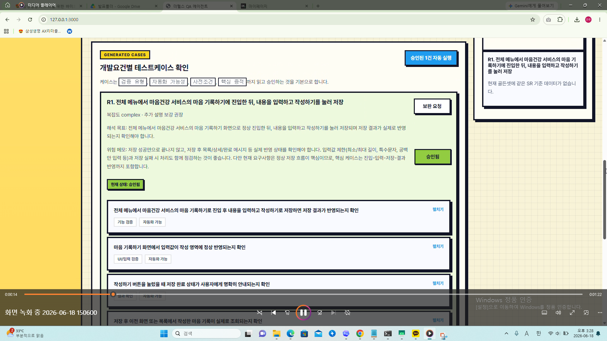
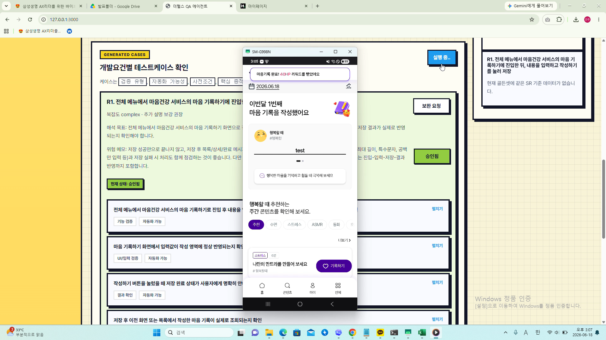
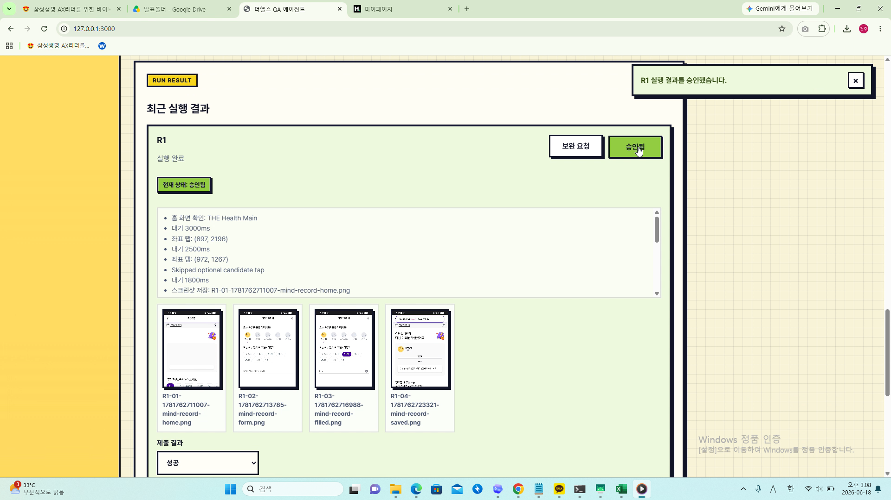

SR 요건 해석

SR과 요구사항을 읽고 테스트 사인을 구조화합니다.
기능, 예외, 경계조건을 구분해 빠뜨리기 쉬운 체크포인트를 먼저 정리하고, 이후 단계의 기준이 되는 테스트 관점을 맞춥니다.
SR 테스트케이스 자동 생성과 테스트 수행 보조를 통해, 검증 속도와 품질 운영 효율을 함께 높이는 QA 지원 Agent입니다.
다양한 SR 요건의 해석부터
테스트 케이스 생성 및 실행/저장까지 효율화 합니다.
SR과 요구사항을 빠르게 구조화하고 테스트 관점의 핵심 포인트를 먼저 정리합니다.
반복 가능한 테스트케이스 초안을 자동 생성해 설계 시간을 줄여줍니다.
실행 체크와 기록 흐름을 도와 QA 운영을 더 빠르고 안정적으로 이어줍니다.
요구사항 해석부터 테스트케이스 생성, 실행 보조까지 이어지는 자동화체계를 통해 반복적인 QA 공수를 최소화합니다.

SR과 요구사항을 읽고 테스트 사인을 구조화합니다.
기능, 예외, 경계조건을 구분해 빠뜨리기 쉬운 체크포인트를 먼저 정리하고, 이후 단계의 기준이 되는 테스트 관점을 맞춥니다.

반복 가능한 테스트케이스 초안을 자동 생성합니다.
기본 시나리오, 예외 시나리오, 확인이 필요한 추가 테스트 후보까지 한 번에 제안해 설계 시간을 줄이고 누락 가능성을 낮춥니다.

실행 과정의 체크리스트와 기록 흐름을 보조합니다.
누락과 중복을 줄이고 재현에 필요한 로그와 조건을 함께 정리해, 결과를 다시 확인하고 설명하기 쉬운 운영 흐름을 만듭니다.
테스트 설계 시간을 줄여 우선순위 높은 SR 대응 속도를 높이고, QA 인력이 판단과 검증에 더 집중할 수 있도록 돕습니다.
케이스 구조를 더 일관되게 유지해 결과의 설명 가능성과 추적 가능성을 높이고, 반복 검증의 품질을 안정적으로 관리합니다.